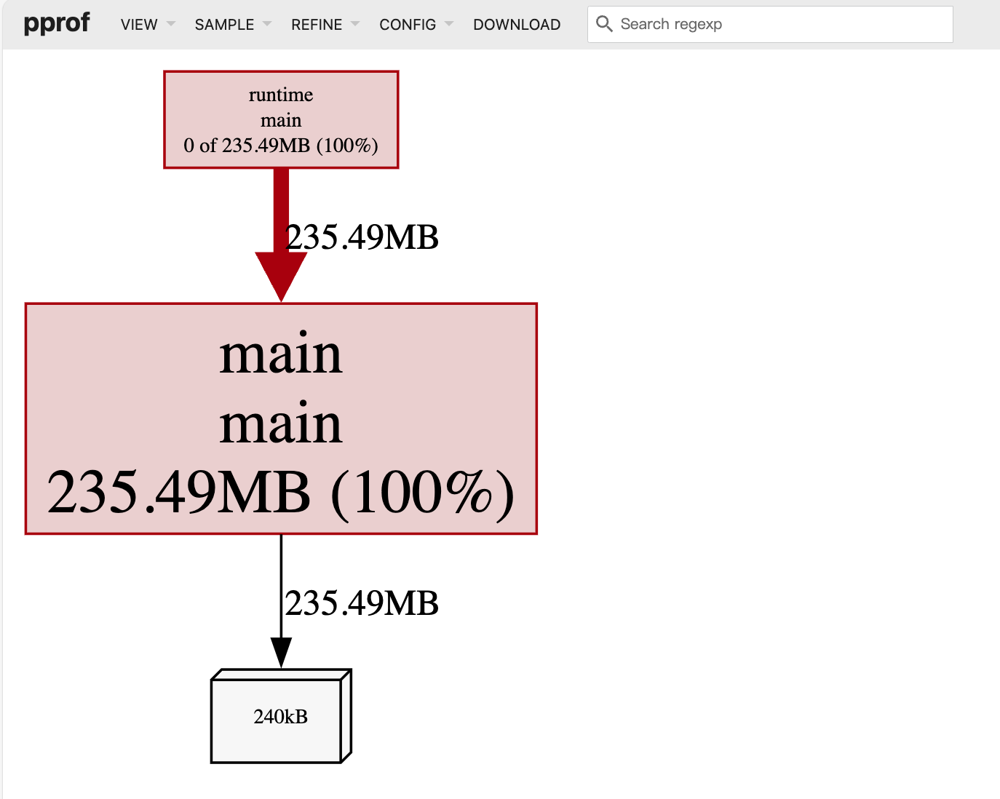

Go heap profile 是尝尝用来检查内存泄露和内存占用大问题的问题的手段，而且非常惯用。
而且，我们也经常创建两个间隔较长的 heap profile, 获取它们的差值来方便查看内存泄露: Hi, 使用多年的go pprof检查内存泄漏的方法居然是错的?!
今天，度厂的一位同学提出了一个很有意思的案例，让我们对 heap profile 有了更深的理解。
问题: heap profile 不能正确反应当前分配的内存?
这个同学举了一个简单的 Go 程序的例子:
|
|
这个程序首先创建一个监听 8080 端口的web 服务，主要利用它访问 http heap profile，所以你看导入了 _ "net/http/pprof" 包。
然后创建了了一个切片，切片包含 10 个元素，每个元素又是一个 []int32 的切片。每个元素占用 20 MiB 的大小 (int32 是 4 个字节，5*1024*1024 是 5 M, 所以是 4*5 MiB=20 Mib)。
所以我们期望 10 个循环创建完毕后，至少此程序会占用 200 MiB 内存，另外在加一些栈、网络、运行时等一些额外的内存的话，略微会比 200MiB 大一些。
运行这个程序，我们看程序每秒的内存占用统计：
可以看到使用 runtime.MemStats 统计的内存分配情况还是比较准的， 200MiB，符合预期。
当你看到 end test 时，表明 200MiB 已经分配，你可以运行下面的命令打开 heap profile:
|
|
如果你使用 Mac 电脑, 可能你还需要手工安装 graphviz:
brew install graphviz
等等，不对呀！怎么 heap profile 才显示 160 MB 的内存？少了 40 MB。和期望的不符。
这 160 MB 内存的确是在创建元素的时候分配的：
可那 40 MB 呢？如果 Heap Profile 数据不准，可就动摇了我们一直以来分析内存泄露的技术基础？
那肯定不会是 Go 实现的问题，否则这个问题早就被暴露和修复了。
接下来我们就介绍根因，讲两个知识点。
把40 MiB 的分配的内存找回来
如果你再等一会，大约在命令行中看到 end test 两分钟后吧，当然再等长一点的时间更佳，你在重新执行命令，查看 heap profile:
|
|
这个时候浏览器中显示出了 200 MB 的内存分配，符合预期了：
神奇啊，等待一段时间之后，heap profile 就显示正常了。难道过了一会才分配的内存？那不可能。因为命令行中 runtime.MemStats 已经显示结束测试前内存已经分配好了。
看到 end test 之后，程序也没做啥呀，就是休眠了 1 小时。
2 分钟很像是垃圾回收搞的鬼，2 分钟强制回收一次。
怀疑归怀疑，我们验证一下，在 end test 之后强制垃圾回收一下，再立即打开 heap profile 是不是显示 200 MiB。
|
|
既然知道是垃圾回收搞得鬼，那么我们就强制垃圾回收，就可以立即显示当前已分配的内存了，不用再等待。
但是线上运行的程序中也不可能随心所欲的让我们在任意的地方动态加 runtime.GC() 呀。
没关系，访问 heap profile 我们加上 gc=1 的参数即可 (大于 0 的数都可以)：
|
|
你可以在程序中把 runtime.GC() 那一行去掉，使用上面的方式访问 heap profile 验证，我就不重复贴图了。
顺便说一下，你还可以加上 debug=1 (非 0 的参数)，可以已文字的方式查看内存分配以及 runtime.MemStats 数据。
如 http://127.0.0.1:8080/debug/pprof/heap?gc=1&debug=1
为啥?
Heap profile 其实调用的 `runtime.MemProfile 进行统计:
|
|
MemProfile 的方法签名如下，它负责统计内存的分配情况：
|
|
注意它的文档有一条：
The returned profile may be up to two garbage collection cycles old. This is to avoid skewing the profile toward allocations; because allocations happen in real time but frees are delayed until the garbage collector performs sweeping, the profile only accounts for allocations that have had a chance to be freed by the garbage collector.
翻译过来：
返回的性能分析数据可能最多延迟两个垃圾回收周期。这样做是为了避免对内存分配产生偏差;因为内存分配是实时发生的,但释放操作直到垃圾回收器进行清理时才会延迟进行,所以性能分析只会统计那些已经有机会被垃圾回收器回收的内存分配。
所以才会重现一开始的问题。我们看到 end test 立即查看 heap profile, 还没有进行垃圾回收，相关的内存统计数据还没有计算出来，所以才看到 160 MB 的内存，而不是 200MB 的内存。
system.GC会强制进行垃圾回收，并且会发布新的heap profile，所以可以看到 200MB 的内存。
|
|
第一个知识点已经介绍完了，也解答了最初的问题。
现在让我们来看第二个知识点。
Heap Profile 是采样的？采啥样？
heap profile 实际上在内存分配时做采样统计的，默认情况下并不会记录所有的内存分配。
这里我们需要关注 runtime.MemProfileRate 这个变量。
|
|
翻译过来：
MemProfileRate控制了在内存分析中记录和报告的内存分配的比例。分析器的目标是每分配MemProfileRate字节时,采样记录一次分配。
如果要在分析中包含每一个分配的内存块,可以将MemProfileRate设置为1。如果要完全关闭内存分析,可以将MemProfileRate设置为0。
处理内存分析数据的工具假设分析的采样率在程序的整个生命周期中保持不变,并等于当前设置的值。如果程序需要改变内存分析的采样率,应该只改变一次,并且尽可能早地在程序执行的开始阶段(例如在main函数的开始部分)进行设置。
如果我们把每次分配的大小改小一点，如下：
|
|
这个时候查看 heap profile，你会发现heap profile和runtime.MemStats统计的内存分配情况不一样，因为 runtime.MemStats 是实时统计的，而 heap profile 是采样统计的。

可以看到 234 MiB 和 230.36 是不一致的。
如果在程序一开始加上 runtime.MemProfileRate = 1, heap profle 数据变成了 234MB, 有一致了。
但是也需要注意，将 runtime.MemProfileRate 设置为 1，对每一次内存都进行采样统计，对性能的影响也相应的增大了，非必要不用更改这个值。
所以，我们默认看到 heap profile, 都是在默认值 512 * 1024 这个阈值下采样统计的，和实际的 heap 上的内存分配可能会有些出入，但是对于我们分析内存泄露，影响不大。